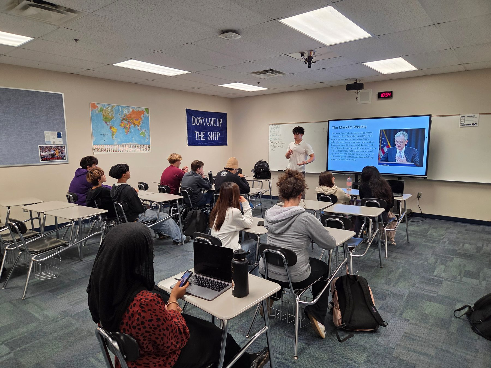

Curriculum
Thesis-Based Investing.
ASIC's curriculum is built around our core investment strategy: Thesis-Based Investing. The strategy centers on using fundamental business metrics and macroeconomic analysis to research companies, drawing from the expertise of local investment advisors and finance professionals.
Year-round, members attend lectures and apply Thesis-Based Investing principles through investment simulations and competitions, building a sound technical foundation for real-world investing.
- 01 Macroeconomic / Stock Market Index Analysis
- 02 Sector Performance
- 03 Company Financials and Operations
- 04 Valuation
- 05 Risk and Portfolio Management
